Last updated: 23 July 2026
ReefTracker is an offline reef-aquarium companion for Android and iOS. It keeps your water tests, dosing, maintenance and equipment in one place – stored entirely on your device, with no account, no cloud requirement and no ads. This guide walks through every part of the app.
Features marked PRO belong to the ReefTracker Pro tier. If you installed the app before the Pro tier existed, you have the Founder's Edition: every feature that existed at that point stays free for you forever (see Editions). Features marked EXPERIMENTAL are hidden until you switch them on in Settings → Experimental.
On first launch, pick your language and create your first aquarium. Choose a setup type – fish-only, soft coral, LPS, SPS or mixed reef – and ReefTracker seeds the recommended parameters and safe ranges for that kind of tank. You can change every range later, so the preset is a starting point, not a commitment. Add the tank volume (used by the dose calculator), and optionally the vendor/model and a start date.
A short feature tour then highlights the less obvious controls in the top bar. You can replay it any time from Settings → Replay tour.
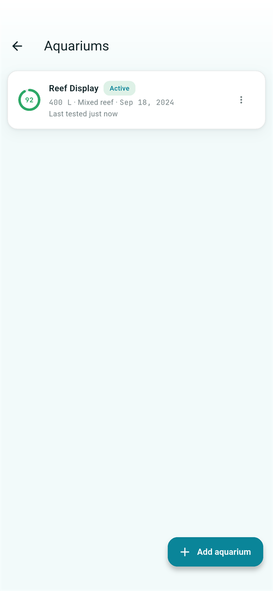
The app has four bottom tabs. Everything except Settings applies to the currently active aquarium, shown in the top bar:
Tap the aquarium name in the top bar to switch tanks or open the aquarium list. Each aquarium keeps its own parameters, safe ranges, history, dosing plan and maintenance schedule. The Standard edition includes up to 2 aquariums (say, a display tank and a quarantine tank); unlimited aquariums are a PRO feature. Deleting an aquarium asks for confirmation and still offers a short Undo window afterwards.
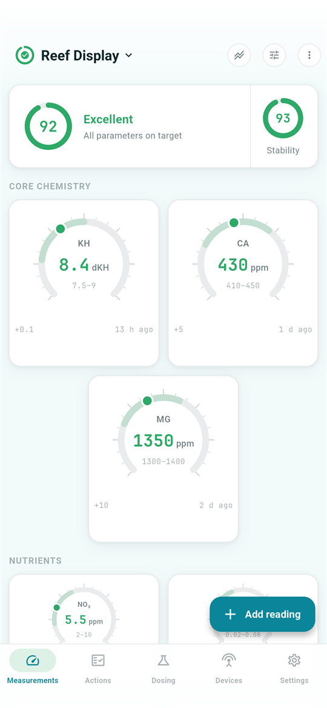
The Measurements tab shows everything at a glance, grouped into sections: Core chemistry (alkalinity, calcium, magnesium) as large gauge dials, Nutrients (nitrate, phosphate, ammonia, nitrite) as smaller gauges, Ratios as one combined card, Environment (temperature, pH, salinity, ORP) as compact pills, and a Microelements summary card. Every value is colored by its health zone – green (ideal), amber (attention) or red (act now) – against your own safe ranges.
Tap any card to open that parameter's history graph. If you prefer a single flat grid of cards in your own order, switch the layout to Flat in Settings → Dashboard.
The card at the top condenses the whole dashboard into a 0–100 health score with a grade (Excellent / Good / Caution / Critical). The score is weighted by how much each parameter matters for a reef, and one red value can never hide behind a crowd of greens. Tap the health ring for a full breakdown – every parameter grouped by zone, each row linking to its history. Readings older than 30 days count as stale and are surfaced rather than silently coloring the dashboard.
The second ring is the stability score PRO – how much your values have been swinging over the last 30/60/90 days (window configurable in Settings → Dashboard), independent of where they sit right now. A tank can be in range yet unstable – corals feel that. Tap it to see which parameters vary the most.
Under the health card, the Insights PRO card lists the top observations about your tank in plain language: out-of-range values, values predicted to leave their range, recovering parameters and overdue tests. Everything is computed on your device by deterministic rules – no AI service, no network. When your tank is fresh, green and steady, the card simply disappears.
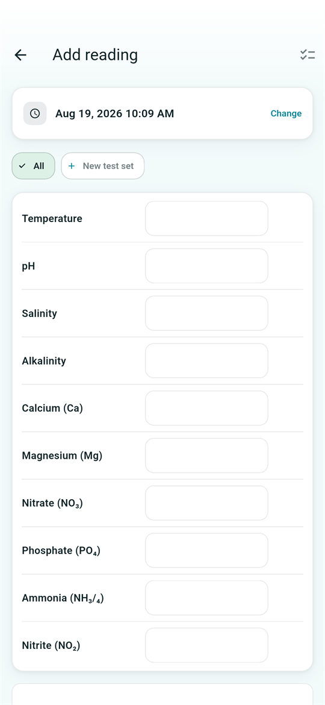
Tap the + Add reading button on the Measurements tab. Enter as many parameters as you tested – they are saved together as one session with a single timestamp, which you can backdate (but never future-date). Each value can carry a note, e.g. which test kit you used or what you observed.
The chip row at the top (All, your sets, +) filters the form to a named group of parameters – create a "Daily test" set with just alkalinity and nitrate, a "Weekly test" with the full panel, and so on. The app remembers your last choice per aquarium. Values you typed stay saved even if a chip currently hides them.
Physically impossible values (a pH of 80, a negative salinity) are rejected outright. Implausible-but-possible values ask for confirmation before saving, so a slipped decimal point doesn't wreck your graphs or trigger false warnings.
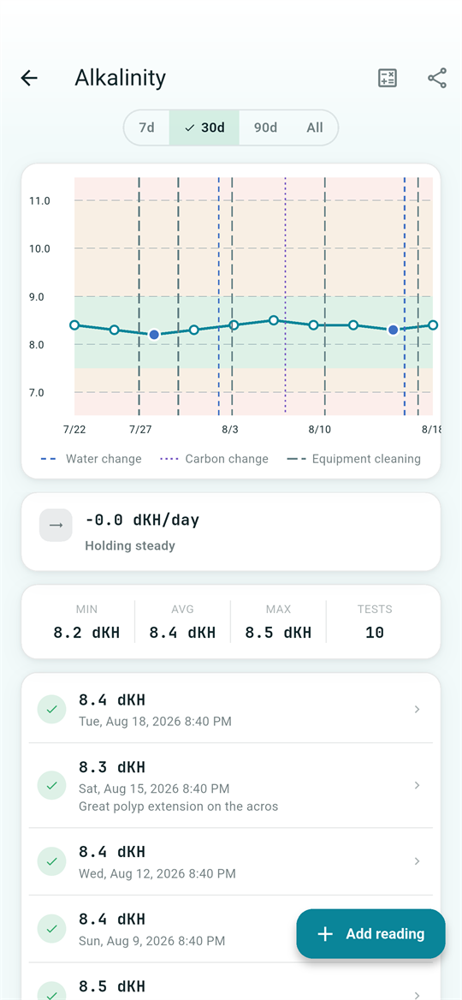
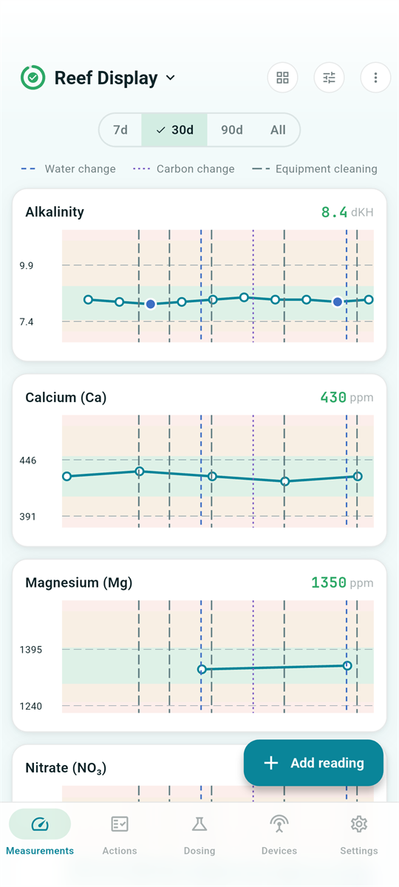
Tap any dashboard card to open its history. The graph draws your safe range as shaded bands behind the data, so you see at a glance when a value drifted out. Vertical dashed lines mark your water changes, carbon changes and equipment cleanings – each type with its own color and dash pattern – so maintenance lines up visually with parameter movements.
ReefTracker fits a trend through your recent readings and shows the per-day rate of change. If a value is drifting toward the edge of its range, the dashboard shows an early warning ("amber in ~5 d") before anything is wrong. A value that is out of range but heading back is recognized as recovering and shown positively instead of being flagged. The trend window and alert horizon are configurable in Settings → Trends.
The compare view (chart icon in the top bar of the Measurements tab) stacks all parameter graphs on one screen with a shared time range – ideal for spotting relationships, like alkalinity falling while calcium holds.
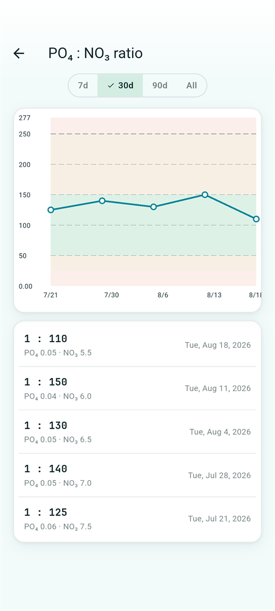
Some things matter as a relationship, not a number. The dashboard's Ratios card tracks PO₄ : NO₃ (the Redfield-style nutrient balance), Mg : Ca, Ca : Alk and Mg : Alk, each with a recommended zone you can edit per tank. Tap a row for the full ratio graph with the same zoom, pan and value popups as parameter graphs. Ratios only combine readings taken reasonably close together – today's phosphate is never divided by a months-old nitrate.
The free (toxic) ammonia row estimates the un-ionized NH₃ fraction of your total ammonia reading from your pH, temperature and salinity, using published scientific models, and compares it against EPA-anchored toxicity limits. Tap it to see the math and the exact inputs used. This matters because the same total ammonia is far more toxic at reef pH than in a low-pH tank.
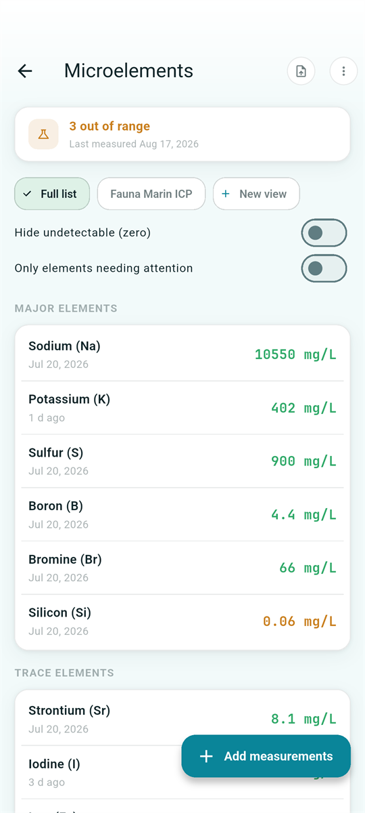
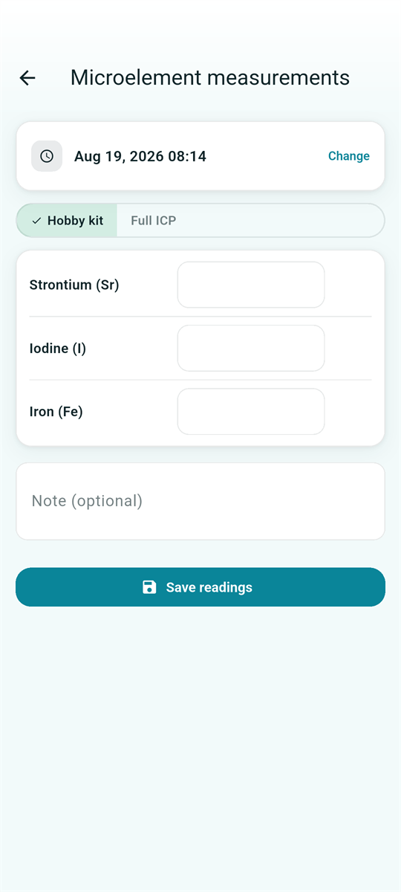
The Microelements screen (tap the dashboard's Microelements card) tracks the full 33-element panel that professional ICP analyses report: major ions, desirable trace elements and contaminants. Defaults are anchored on natural seawater and ICP-lab targets; contaminants use one-sided "up to a ceiling" ranges. Units follow ICP convention – mg/L for majors, µg/L for traces and contaminants.
If you don't track trace elements, switch the whole feature off in Settings – the dashboard card disappears, your stored values remain.
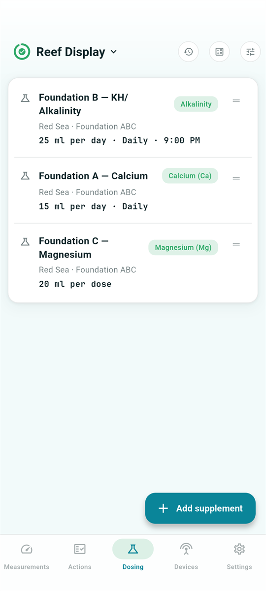
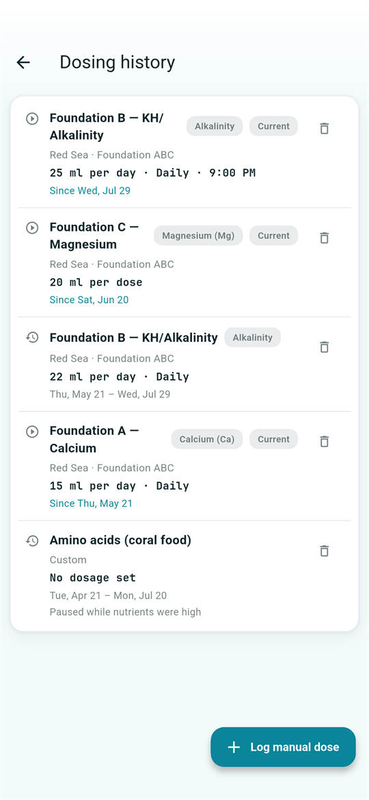
The Dosing tab records your standing supplement regimen: what you dose, how much, and on which schedule (daily, every N days, or fixed weekdays at a set time). Pick products from the built-in catalog of reef brands and dosing programs – with verified potencies – or add custom products for anything else. Each entry is tagged with the current dashboard status of the element it targets, so you can see at a glance whether the thing you're dosing for is actually in range.
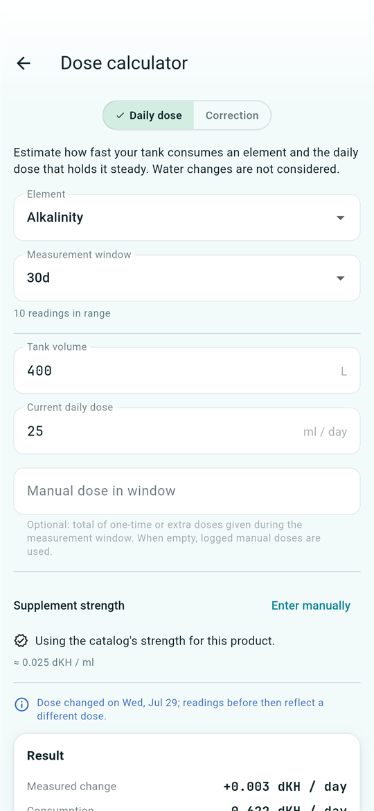
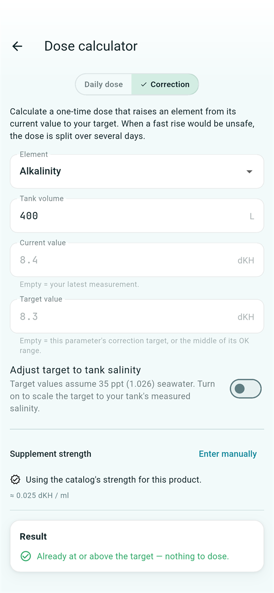
Open the calculator from the Dosing tab's top bar, or from a dosable parameter's history screen. It has two modes:
Computes your tank's actual daily consumption of an element from your recent readings, your current dosing and any logged manual doses – then recommends whether to raise, lower or keep the current dose. Inputs (element, time window, tank volume, current dose, supplement strength) are pre-filled from your data and all editable. The result card explains itself: measured change per day, consumption per day, dosing input per day, and a clear guidance line – including an over-dosing warning when you're dosing more than the tank consumes.
Computes the one-off dose to lift an element from its current value to a target. Current value and target are pre-filled (latest reading and your tank's target). When the needed rise exceeds the element's safe daily limit, the plan is automatically split over several days, with the per-day dose highlighted. The optional "Adjust target to tank salinity" switch scales book targets (stated for 35 ppt) to your tank's actual measured salinity. A Log this dose button records what you just added as a manual dose – which then feeds back into the daily-dose math.
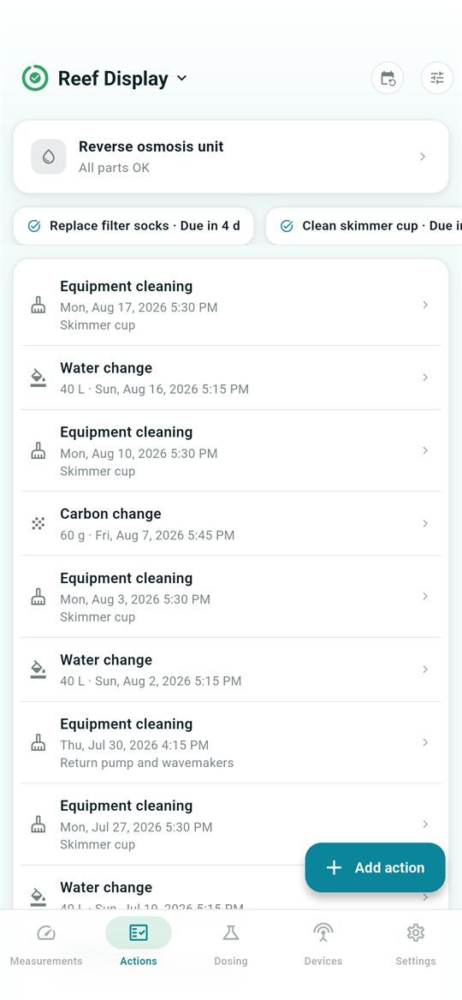
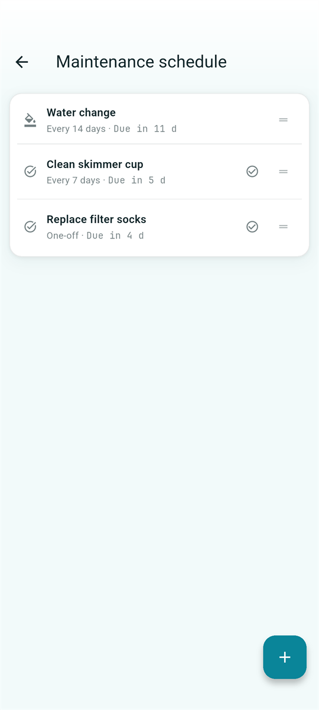
The Actions tab is your maintenance logbook. The + button logs a water change (with volume), a carbon/media change (with weight) or an equipment cleaning – each with an optional note and a backdatable timestamp. Every entry can be edited or swiped away (with Undo), and all three types appear as dashed markers on your parameter graphs.
The calendar icon opens your maintenance schedule: recurring or one-off tasks, either typed (water change, carbon change, cleaning) or custom-titled ("clean skimmer cup"). Repeats can be every N days/weeks/months, fixed weekdays ("every Monday"), or a fixed day of the month ("every 1st").
Scheduling is elastic: completing a task resets its timer from the day you actually did it, so doing a water change three days late doesn't stack phantom overdue warnings. Typed tasks advance automatically whenever you log the matching action anywhere in the app. Due and overdue tasks appear as chips above the action log – tap a chip to log the action or mark the task done.
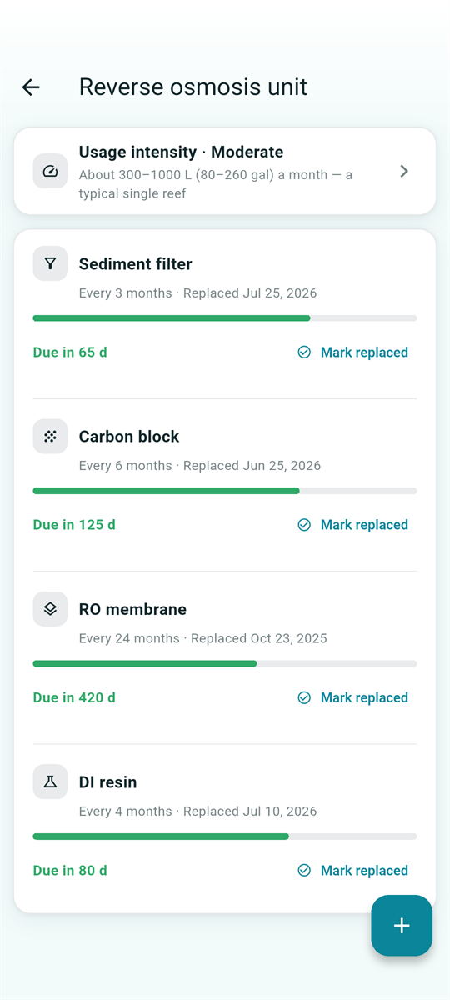
ReefTracker tracks your RO/DI unit as a household appliance shared by all your aquariums – one unit, one place, reachable from the card at the top of every tank's Actions tab. The typical four stages are pre-configured with sensible lifespans (sediment 3 months, carbon block 6 months, membrane 24 months, DI resin 4 months); add custom stages or disable ones your unit doesn't have.
Each stage shows a remaining-life bar with green/amber/red due status. Tap Mark replaced when you change a filter – the date can be backdated and every replacement is kept as history (with Undo). Optional reminders notify you when a stage is due. No RO unit? Switch the feature off in Settings.
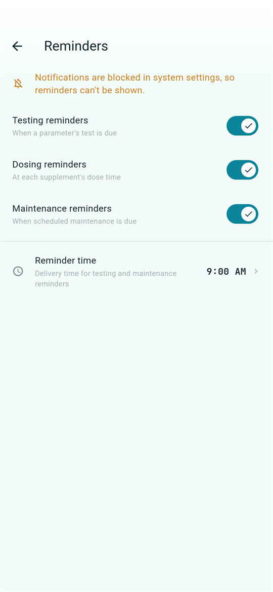
All notifications are opt-in – the app stays silent until you enable them in Settings → Reminders. Three kinds:
Testing and maintenance reminders arrive at a configurable time of day (default 09:00). Overdue items don't re-notify – the due chips on the Actions tab carry the overdue state instead.
If you test with a Hanna HI97115 Marine Master photometer, export the test history CSV from Hanna's Hanna Lab app and import it via the Measurements tab's ⋮ menu → Import measurements. Readings keep their original timestamps, tests taken together stay grouped as sessions, and re-importing the same file only adds what's new – no duplicates, ever. Every import can be undone with one tap, and Settings → Measurement import shows the import status per aquarium with rewind/reset controls.
With experimental features enabled (Settings → Experimental), the ⋮ menu gains Hanna checker: connect to a HI97115C over Bluetooth and run measurements live – method by method or via your saved test sets – then save the confirmed results with the meter's own timestamps. Built-in reagent reaction timers (15 s / 30 s / 2 min) beep when the wait is over, and the screen stays awake while a test runs. Measurements only: meter settings and firmware updates stay in Hanna's own app.
For Hanna pocket checkers (the small single-parameter colorimeters with an LCD), point your camera at the display and ReefTracker reads the value for you – no typing. 14 checker models are supported; the model is recognized automatically from the case color and the reading's format, and the app only asks when models would interpret the value differently. Recognition runs fully on your device – no photos are stored or uploaded. The viewfinder starts at 2× zoom so you can scan from a comfortable distance. An optional quick-scan camera button next to Add reading can be enabled in Settings → Experimental.
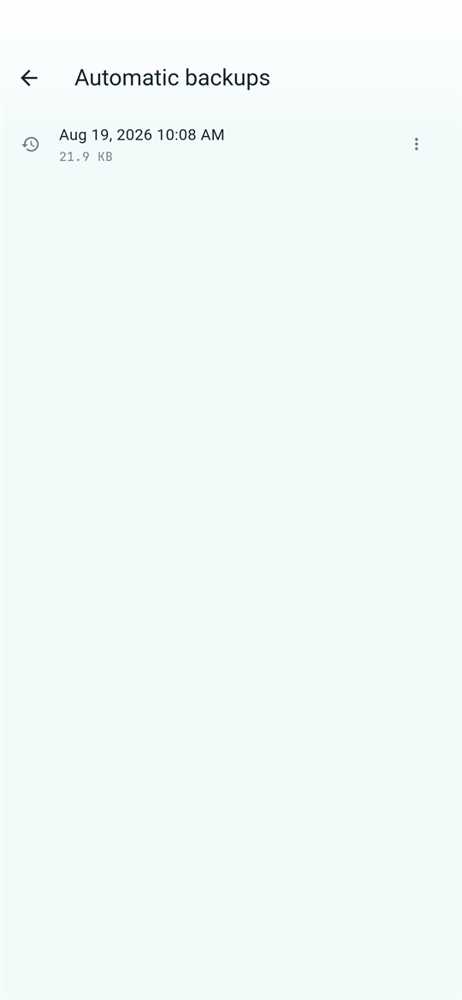
Everything lives on your device, so backups matter. In Settings → Backup & Restore:
The Measurements tab's ⋮ menu → Ask your AI builds a ready-to-paste summary of your tank – current values against their ranges, trends, dosing plan and recent maintenance – that you can paste into ChatGPT, Claude, Gemini or any AI chat to ask for advice. The summary is prepared entirely on your device; ReefTracker itself sends nothing anywhere.
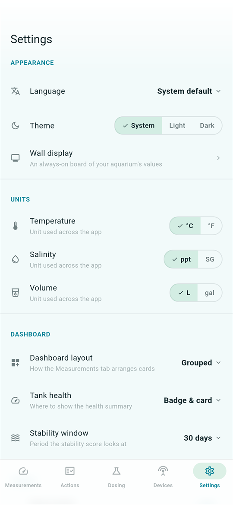
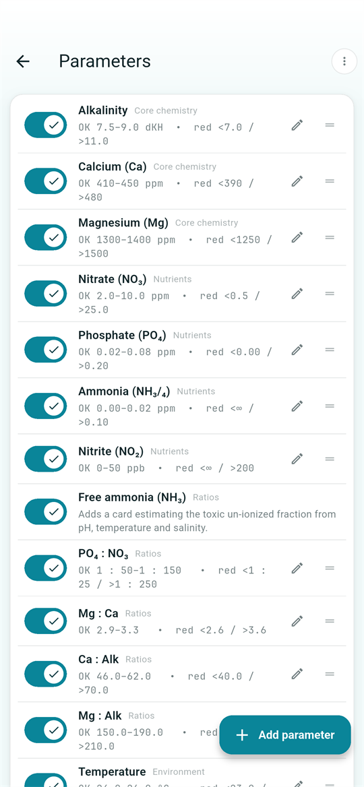
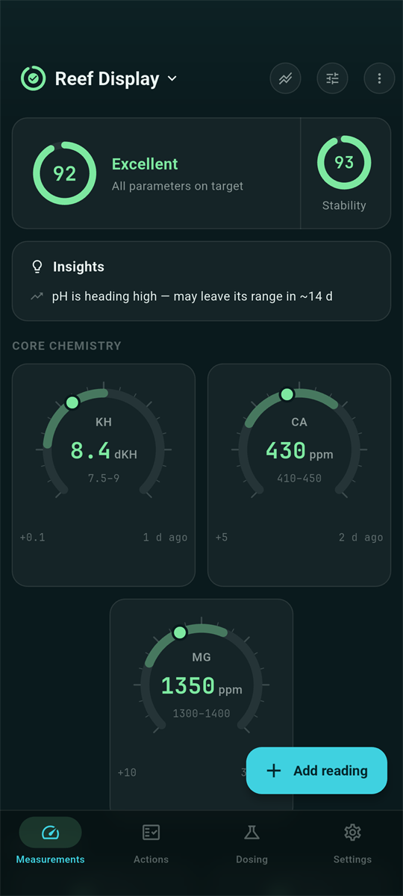
The sliders icon in the top bar opens Manage parameters: choose which parameters you track, drag to reorder them, and tap one to edit its safe ranges – the green/amber/red bounds every color in the app derives from – plus its target value and testing reminder. Ranges are per aquarium, so your SPS display and your quarantine tank can have different targets. Ratio cards and the free-ammonia row are managed here too.
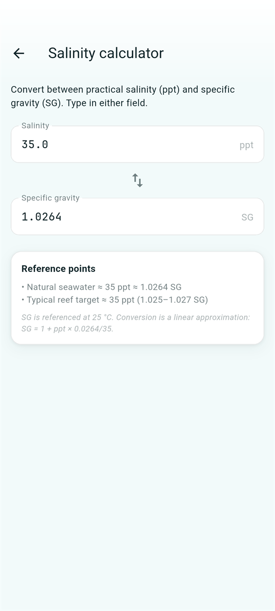
The salinity calculator (Settings → Tools) converts between ppt and specific gravity – useful when your refractometer and your target speak different units.
ReefTracker's core is free for everyone: unlimited readings, graphs, trends, dosing plans, maintenance, reminders, backups and 2 aquariums. The Pro tier adds the power features marked throughout this guide:
| Pro feature | What it adds |
|---|---|
| Unlimited aquariums | Beyond the 2 included tanks |
| Tank stability score | The second axis of tank health |
| Smart insights | Prioritized plain-language observations |
| Dose calculator | Consumption analysis & correction doses |
| ICP report import | One-step Fauna Marin / ATI import |
| Hanna Lab import | CSV import from the Hanna Lab app |
| Hanna checker connection & scan | Live Bluetooth measurements and camera reading (experimental) |
| Google Drive sync | Automatic cloud backups (Android) |
Founder's Edition: if you installed ReefTracker before the Pro tier launched, the features that existed then remain free for you forever. Your Founder status travels inside your backups, so restoring on a new device keeps it. You can check your edition in Settings → About.
Whatever your edition, your data is never locked away – anything you created stays viewable, editable and exportable.
Questions, bug reports and feature requests are welcome at bobrovsky@seznam.cz – please include your device model, OS version and app version (Settings → About). See also the support page for frequently asked questions and the privacy policy.